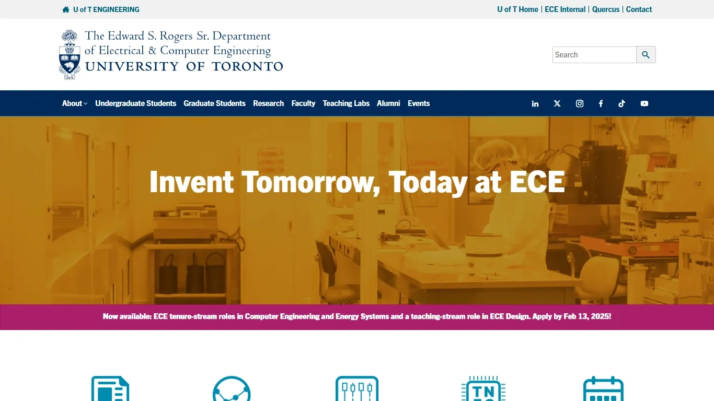

The Goal: Shape the Home page as an Access Hub.
I collaborated with department admins and stakeholders from co-op, undergraduate, graduate, and events teams to define the homepage structure and Content Architecture.

UI/UX
WEB DESIGN
FIGMA
WORDPRESS
EDUCATIONAL INSTITUTION
Summary: Case study detailing the ECE homepage redesign, focused on rebuilding the information hierarchy to engage students.
Use these to jump to a section you are interested in:
ECE at U of T maintained a web presence that had become outdated and unfocused, featuring legacy content, competing calls to action, and a lack of clear departmental identity. The department’s initial objective was a homepage that could better engage prospective students while more accurately reflecting its academic identity.
It became clear that the department required a comprehensive redesign focused on addressing these three pain points:
The presence of legacy, outdated content.
Fractured user journey for students seeking essential academic information and career opportunities.
Lack of visual and structural alignment with University of Toronto and FASE* branding.
*The ECE Department falls under the University of Toronto's Faculty of Applied Sciences and Engineering (FASE).
I led the redesign, improving information flow and accessibility across the homepage and funneling that into pages that provided most value.
Disclaimer: As this public website continues to evolve, the page may differ from the versions shown below. I have since left the organization, and any updates made thereafter are at their discretion.
The homepage required a redesign to modernize its structure, improve content visibility, and introduce interactive features. I started with a content audit and secondary research.
Content Audit & Discovery Research: Reviewed fellow faculty sites and other engineering websites to define industry-standard patterns, establish a hierarchy, and identify content gaps.
Synthesizing Insights, Ideating, Mockups: Created wireframes and user flows to map content flow and guide users through key information. Shared designs with leadership and iterated based on feedback from admins, students, and marketing.
WordPress Development: Built modular sections in WordPress, added animations, and custom code where needed.
Improved site-wide discovery, resulting in longer session times and stronger traffic flow to internal pages.
Optimized the user journey to significantly reduce time-to-value for critical academic and program information.
Transformed the homepage into a marketing asset, allowing staff to promote student life-focused media content and departmental events.
I collaborated with department admins and stakeholders from co-op, undergraduate, graduate, and events teams to define the homepage structure and Content Architecture.
Here's what the ECE Home page looked like before:

This is what the other Engineering departments under the University of Toronto looked like:
Additionally, I reviewed other North American engineering department/faculty websites to understand industry-standard content design principles, CTAs, and information hierarchy.
Most key design decisions were guided by stakeholder queries and requests. The site needed to serve students while being represented, managed, and maintained by staff. Simply comparing the site to its peers across the university confirmed that the branding was inconsistent and needed alignment.
for first-time users over information density to accelerate user orientation
Positioned prospective students as the Primary user segment over researchers, faculty, and partners for better acquisition
and focus on an extended vertical scroll over immediate discoverability in favor of progressive disclosure
The page was restructured into a component-based architecture, ensuring that updates to media assets remain independent of the global layout. This modularity supports long-term scalability and ensures the site remains maintainable for non-technical administrators.
A flexible primary component designed to showcase rotating marketing campaigns and high priority site pages
A dedicated information block focused on academic pathways
A dedicated content section for the Chair's welcome message
A section for prospective students, industry partners, and the internal research ecosystem

Pictured Above: Content Architecture
Click through each tab to see designs.
Students require immediate information and access to core academic resources.
* Pages I built for the Department
Pictured below: What it looked Like(L) and What I Proposed(R)

Pictured below: Approved High Fidelity Wireframe for Initial Go-Live(L) and Iterative Change Post Go-Live(R)

Students require a scannable method to explore and differentiate between undergraduate and graduate pathways.
Pictured below: What it looked Like(L) and What I Proposed(R)

Pictured below: Approved High Fidelity Wireframe for Initial Go-Live(L) and Iterative Change Post Go-Live(R)

Students and industry partners require an intuitive interface to discover Research and Industry Opportunities*.
* Pages I built for the Department
Pictured below: What it looked Like(L) and What I Proposed(R)

Pictured below: Approved High Fidelity Wireframe for Initial Go-Live(L) and Iterative Change Post Go-Live(R)

“(Department Chair) signed off on the design. She's a fan!”
Click on the images below to view the intially approved mockups.
We intentionally focused on Introduction, and treated discovery as a task for the secondary pages.
We did not preserve legacy content and focused on fresh content perspectives and visuals.
We focused on Prospective students discovering the department, any content for other audiences had to primarily serve Students.
Now that the Designs were approved, I moved onto Web Development.
Building it out on our WordPress platform, I ensured the homepage now communicates the department’s identity while providing access to programs, events, and research opportunities.
Disclaimer: As the public website evolves, the live page may differ from the versions shown in this case study.
Content and structure guide students through the site, reinforcing credibility and engagement. The design remains functional and adaptable, ensuring long-term value for both the department and students.
In March 2025, The section featuring the Department Chair was later updated to include an events calendar widget and linked to the Events page I built.
I also added UI animations.